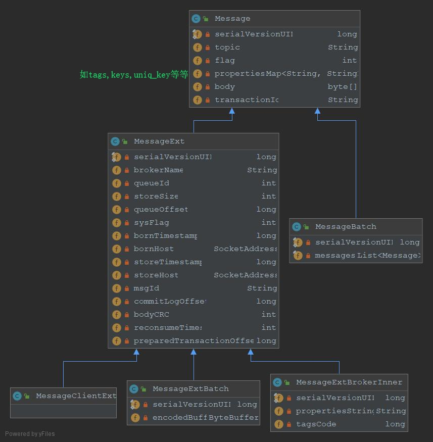
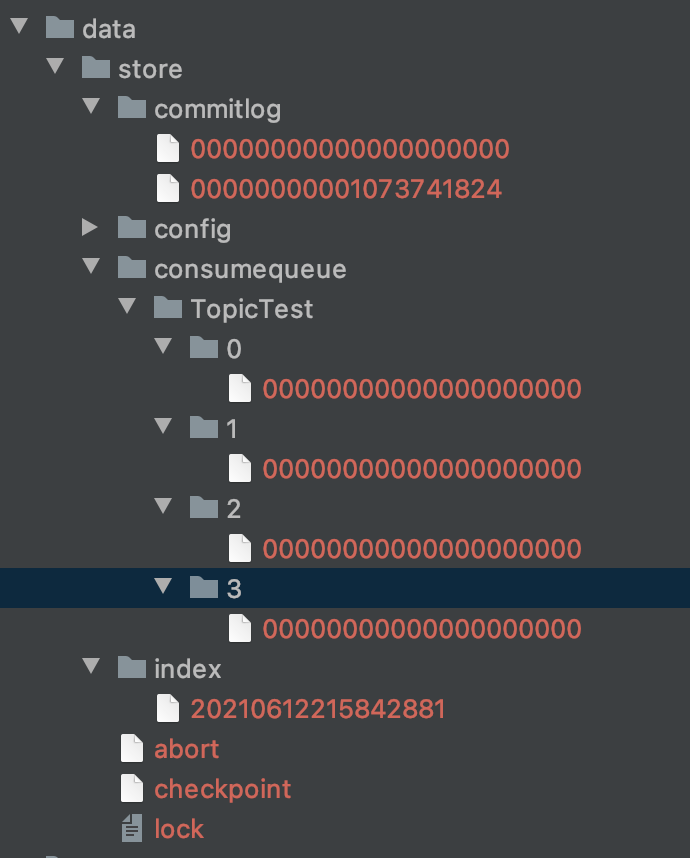

消息过滤¶
RocketMQ分布式消息队列的消息过滤方式有别于其它MQ中间件，是在Consumer端订阅消息时再做消息过滤的。RocketMQ这么做是在于其Producer端写入消息和Consumer端订阅消息采用分离存储的机制来实现的，Consumer端订阅消息是需要通过ConsumeQueue这个消息消费的逻辑队列拿到一个索引，然后再从CommitLog里面读取真正的消息实体内容，所以说到底也是还绕不开其存储结构。其ConsumeQueue的存储结构如下，可以看到其中有8个字节存储的Message Tag的哈希值，基于Tag的消息过滤正式基于这个字段值的。
主要支持如下2种的过滤方式：
(1) Tag过滤方式：Consumer端在订阅消息时除了指定Topic还可以指定TAG，如果一个消息有多个TAG，可以用||分隔。其中，Consumer端会将这个订阅请求构建成一个 SubscriptionData，发送一个Pull消息的请求给Broker端。Broker端从RocketMQ的文件存储层—Store读取数据之前，会用这些数据先构建一个MessageFilter，然后传给Store。Store从 ConsumeQueue读取到一条记录后，会用它记录的消息tag hash值去做过滤，由于在服务端只是根据hashcode进行判断，无法精确对tag原始字符串进行过滤，故在消息消费端拉取到消息后，还需要对消息的原始tag字符串进行比对，如果不同，则丢弃该消息，不进行消息消费。
(2) SQL92的过滤方式：这种方式的大致做法和上面的Tag过滤方式一样，只是在Store层的具体过滤过程不太一样，真正的 SQL expression 的构建和执行由rocketmq-filter模块负责的。每次过滤都去执行SQL表达式会影响效率，所以RocketMQ使用了BloomFilter避免了每次都去执行。SQL92的表达式上下文为消息的属性。
消息查询¶
RocketMQ支持按照下面两种维度（“按照Message Id查询消息”、“按照Message Key查询消息”）进行消息查询。
1. 按照offsetMsgId查询消息¶
RocketMQ中的offsetMsgId的长度总共有16字节，是由Broker服务端在写入消息时生成的（采用”IP地址+Port端口”与“CommitLog的物理偏移量地址”做了一个字符串拼接）。
“按照MessageId查询消息”具体做法是：Client端从MessageId中解析出Broker的地址（IP地址和端口）和Commit Log的偏移地址后封装成一个RPC请求后通过Remoting通信层发送（业务请求码：VIEW_MESSAGE_BY_ID）。Broker端走的是QueryMessageProcessor，读取消息的过程用其中的 commitLog offset 和 size 去 commitLog 中找到真正的记录并解析成一个完整的消息返回。
2. 按照Message Key查询消息¶
“按照Message Key查询消息”，主要是基于RocketMQ的IndexFile索引文件来实现的。
IndexFile文件名是以创建时的时间戳命名的，文件大小是固定的，等于$40+500W4+2000W20= 420000040$字节,大约400M。整个Index File的结构如图，40 Byte 的Header用于保存一些总的统计信息， Slot Table并不保存真正的索引数据，而是保存每个槽位对应的单向链表的头。$20*2000W$是真正的索引数据，即一个 Index File 可以保存 2000W个索引。
IndexFile文件逻辑结构类似JDK中HashMap的实现，如果消息设置了UNIQ_KEY这个属性，就用 topic + “#” + UNIQ_KEY作为key来做写入操作，如果消息设置了KEYS属性（多个KEY以空格分隔），也会用 topic + “#” + KEY 来做索引。
其中索引结点包含了Key Hash/CommitLog Offset/Timestamp/NextIndex offset 这四个字段，一共20 Byte。NextIndex offset 即前面读出来的 slotValue，如果有 hash冲突，就可以用这个字段将所有冲突的索引用链表的方式串起来了。Timestamp记录的是消息storeTimestamp之间的差，并不是一个绝对的时间。

“按照Message Key查询消息”的方式，RocketMQ的具体做法是，主要通过Broker端的QueryMessageProcessor业务处理器来查询，读取消息的过程就是用topic和key找到IndexFile索引文件中的一条记录，根据其中的commitLog offset从CommitLog文件中读取消息的实体内容。
源码结构¶

namesrv服务¶
把distribution/conf下的 logback_namesrv.xml拷贝新创建的conf文件夹下；在idea中配置环境变量ROCKETMQ_HOME=/Users/jun/work/code/github/rocketmq然后启动即可。
启动流程：
-
创建NamesrvController：解析-c指定的配置文件（非必要），-p指定的单个属性配置（--属性名 属性值），填充到NamesrvConfig和NettyServerConfig，然后创建
new NamesrvController(namesrvConfig, nettyServerConfig) -
初始化：创建netty服务端remotingServer处理请求，创建心跳检测定时任务每10秒去检测2分钟不活动的broke；定时任务每10分钟打印一次KV。
-
start：启动netty服务remotingServer
路由管理
namesrv的主要作用就是注册和删除broke，并为生产者和消费者提供topic的路由信息查询。
RouteInfoManager保存着所有的路由信息，使用ReadWriteLock保证并发安全，主要包括：
一个集群是可以包含多个master broke
// 主要存储topic和brokerName
private final HashMap<String/* topic */, List<QueueData>> topicQueueTable;
// 主要存储brokerName和（cluster，多个brokerId/brokerAddr）
private final HashMap<String/* brokerName */, BrokerData> brokerAddrTable;
private final HashMap<String/* clusterName */, Set<String/* brokerName */>> clusterAddrTable;
// 主要存储brokerAddr和lastUpdateTimestamp
private final HashMap<String/* brokerAddr */, BrokerLiveInfo> brokerLiveTable;
private final HashMap<String/* brokerAddr */, List<String>/* Filter Server */> filterServerTable;

心跳注册
broke端在启动BrokerController.start()时，先会发出一个注册broke请求，然后启动定时任务以后每30秒（可以配置10秒～60秒）发出注册请求到所有的namesrv。namesrv的DefaultRequestProcessor负责处理所有的请求，如果请求指令是REGISTER_BROKER，就调用RouteInfoManager.registerBroker()更新broke心跳信息，需要获取写锁才能修改。
路由删除
NamesrvController启动了一个每10秒执行的任务，遍历brokerLiveTable，检测每个broke的上次lastUpdateTimestamp心跳时间，如果已经超过2分钟未更新，就关闭连接，onChannelDestroy()更新各个table。注意同样要先获取写锁。
broke在正常关闭时会触发BrokerController.shutdown()，会发出unregisterBrokerAll()请求，namesrv的DefaultRequestProcessor收到UNREGISTER_BROKER的请求指令后，会调用RouteInfoManager.unregisterBroker()更新各个table。
路由发现
DefaultRequestProcessor收到producer的GET_ROUTEINFO_BY_TOPIC请求指令后，会在RouteInfoManager.pickupTopicRouteData()查找topic对应的broke信息。要获取读锁
producer服务¶
producer的启动¶
-
开发者设置DefaultMQProducer的NamesrvAddr地址后，调用start()。
-
this.setProducerGroup(withNamespace(this.producerGroup));，producerGroup是将相同角色的生产者归为一组，在发送事务消息时，可以在一个生产者实例挂掉后，相同producerGroup下的其他生产者实例继续同一个事务的commit或rollback，但是一般没必要。 -
this.defaultMQProducerImpl.start();DefaultMQProducer的功能是委托给DefaultMQProducerImpl类:
主要是启动MQClientInstance，同一个进程只有一个MQClientInstance，消费者和生产者共享之
public void start(final boolean startFactory) throws MQClientException {
switch (this.serviceState) {
case CREATE_JUST:
this.serviceState = ServiceState.START_FAILED;
// 先校验producerGroup不能为空，长度不能超过255个字符，不能有特殊字符等。
this.checkConfig();
// 设置instanceName为进程PID
if (!this.defaultMQProducer.getProducerGroup().equals(MixAll.CLIENT_INNER_PRODUCER_GROUP)) {
this.defaultMQProducer.changeInstanceNameToPID();
}
// 创建MQClientInstance，clientId=IP@PID，MQClientInstance负责broke，namesrv通信
// 同一个进程只有一个MQClientInstance，消费者和生产者共享之
this.mQClientFactory = MQClientManager.getInstance().getOrCreateMQClientInstance(this.defaultMQProducer, rpcHook);
// 注册当前生产者到MQClientInstance，可能有多个group的producer
boolean registerOK = mQClientFactory.registerProducer(this.defaultMQProducer.getProducerGroup(), this);
if (!registerOK) {
this.serviceState = ServiceState.CREATE_JUST;
throw new MQClientException();
}
// 向topic路由缓存表里添加一个默认topic，这个在发送里会提到
this.topicPublishInfoTable.put(this.defaultMQProducer.getCreateTopicKey(), new TopicPublishInfo());
if (startFactory) {
// 启动MQClientInstance,很多重要逻辑在里面，如开启每30秒更新路由信息表的定时任务，等等等等。。。
mQClientFactory.start();
}
log.info("the producer [{}] start OK");
// 标记为运行中，防止重复启动
this.serviceState = ServiceState.RUNNING;
break;
// 这里应该是用来判断重复启动
case RUNNING:
case START_FAILED:
case SHUTDOWN_ALREADY:
throw new MQClientException("The producer service state not OK, maybe started once");
default:
break;
}
// 发送心跳信息到所有的broke，为什么？
this.mQClientFactory.sendHeartbeatToAllBrokerWithLock();
this.timer.scheduleAtFixedRate(new TimerTask() {
@Override
public void run() {
try {
RequestFutureTable.scanExpiredRequest();
} catch (Throwable e) {
log.error("scan RequestFutureTable exception", e);
}
}
}, 1000 * 3, 1000);
}
消息的发送¶
producer提供了同步发送，异步发送，sendOneWay三种方式，另外可以指定MessageQueue和选择策略，timeout，批量发送消息。

消息的三种发送方式最终都是委托给了DefaultMQProducerImpl.private SendResult sendDefaultImpl(Message msg,final CommunicationMode communicationMode, final SendCallback sendCallback,final long timeout)，timeout默认3秒
其中message的结构和属性如下：

Message{topic='juTopic', flag=0, properties={UNIQ_KEY=7F0000010DA418B4AAC2992744CA0000, WAIT=true, TAGS=TagA}, body=[72, 101, 108, 108, 97, 32, 52], transactionId='null'}
1. 消息校验¶
如topicName不能包含特殊字符，不能是系统使用的SCHEDULE_TOPIC_XXXX，长度不能超过127个字符；消息内容不能为空，不能大于4M
2. 查找topic路由¶
DefaultMQProducerImpl.topicPublishInfoTable缓存了所有topic的路由信息：
// 每个topic对应的路由信息
public class TopicPublishInfo {
private boolean orderTopic = false;
private boolean haveTopicRouterInfo = false;
// MessageQueue，发送时其实就指定了哪个MessageQueue
private List<MessageQueue> messageQueueList = new ArrayList<MessageQueue>();
private volatile ThreadLocalIndex sendWhichQueue = new ThreadLocalIndex();
// namesrv返回的原始路由信息，
private TopicRouteData topicRouteData;
}
发送消息时先去查缓存Table，有则返回，查询不到就委托MQClientInstance去namesrv去获取topic对应的路由信息，更新本地缓存路由表。
另外MQClientInstance.startScheduledTask()还会每30秒从namesrv更新当前生产者和消费者关心的topic路由信息
for (String topic : topicList) {
// 循环更新每个topic信息
this.updateTopicRouteInfoFromNameServer(topic);
}
3. 选择要发送的MessageQueue¶
默认的逻辑，其实就是ThreadLocal保存一个Integer，每次发送递增1，取模topic路由里的MessageQueue，即每次发送时遍历MessageQueue选择一个。如果属于重试，不使用上次失败的lastBrokerName，这是默认情况。
public MessageQueue selectOneMessageQueue() {
int index = this.sendWhichQueue.getAndIncrement();
// 搞一个index，每次递增，取模messageQueue长度，其实就是遍历messageQueue了
int pos = Math.abs(index) % this.messageQueueList.size();
if (pos < 0)
pos = 0;
return this.messageQueueList.get(pos);
}
如果开启sendLatencyFaultEnable，则根据维护了发送brakeName失败过的latencyFaultTolerance选择一个没有发送失败过或者相对较好的MessageQueue。
4. 发送消息¶
sendKernelImpl()是发送消息的内核实现，准备一些消息发送的准备工作：如createUniqID()生成消息唯一uni_key；压缩超过4K的消息；执行消息发送禁止的钩子this.executeCheckForbiddenHook()；发送消息时的钩子this.executeSendMessageHookBefore(context);;
MQClientAPIImpl()最终负责发送消息
批量发送消息是将属于同一个topic的消息一起打包发送，减少网络传输次数，这要依据单条消息的长度，总长度不能超过4M。批量发送消息也就是先将消息进行打包,然后调用的方法和普通的消息是一样的this.defaultMQProducerImpl.send(batch(msgs), timeout)。
broke服务¶
把distribution/conf下的broke.conf, logback_broke.xml拷贝新创建的conf文件夹下；在idea中配置环境变量ROCKETMQ_HOME=/Users/wangjun/work/code/github/rocketmq和指定配置文件地址-c /Users/wangjun/work/code/github/rocketmq/conf/broker.conf然后启动即可。
Broker主要负责消息的存储、投递和查询以及服务高可用保证，为了实现这些功能，Broker包含了以下几个重要子模块。
- Remoting Module：整个Broker的实体，负责处理来自clients端的请求。
- Client Manager：负责管理客户端(Producer/Consumer)和维护Consumer的Topic订阅信息
- Store Service：提供方便简单的API接口处理消息存储到物理硬盘和查询功能。
- HA Service：高可用服务，提供Master Broker 和 Slave Broker之间的数据同步功能。
- Index Service：根据特定的Message key对投递到Broker的消息进行索引服务，以提供消息的快速查询。

启动流程¶
类似于namesrv的启动
- 加载配置文件，创建BrokerController：配置类有brokerConfig，nettyServerConfig，nettyClientConfig，messageStoreConfig，加载命令行指定的配置文件或属性
- 初始化：
- 启动：
- 启动定时任务线程池，每30秒（默认）去注册broke到所有的namesrv
消息存储流程¶

主要逻辑在rocket-store里的DefaultMessageStore类里。
查看DefaultMessageStore实现的MessageStore接口可以看出提供了哪些功能，需要仔细看看，以理解DefaultMessageStore。
- putMessages(),
- asyncPutMessage(),
- getMaxOffsetInQueue(),
- getMinOffsetInQueue(),
- long getCommitLogOffsetInQueue(final String topic, final int queueId, final long consumeQueueOffset);
- long getOffsetInQueueByTime(final String topic, final int queueId, final long timestamp);
- MessageExt lookMessageByOffset(final long commitLogOffset);
消息存储的最终入口方法是DefaultMessageStore的 Result putMessage(MessageExtBrokerInner msg) 方法。入参接受的消息类MessageExtBrokerInner相比MessageExt多了propertiesString，tagsCode两个属性
/**
* 消息处理的重要方法
*/
@Override
public PutMessageResult putMessage(MessageExtBrokerInner msg) {
// check 不能是slave结点，磁盘是否可写，pageCache是否busy
PutMessageStatus checkStoreStatus = this.checkStoreStatus();
if (checkStoreStatus != PutMessageStatus.PUT_OK) {
return new PutMessageResult(checkStoreStatus, null);
}
// check topic不能超过127个字符, message.PropertiesString不能大于32767个字符
PutMessageStatus msgCheckStatus = this.checkMessage(msg);
if (msgCheckStatus == PutMessageStatus.MESSAGE_ILLEGAL) {
return new PutMessageResult(msgCheckStatus, null);
}
// 交给commitLog！！！！
PutMessageResult result = this.commitLog.putMessage(msg);
// 记录下putMessage耗时和失败次数 ，省略。。。
return result;
}
commitLog负责消息的磁盘写入，HA同步等，上面调用commitLog.putMessage(msg)如下：
-
如果是延时消息，复写topic为SCHEDULE_TOPIC_XXXX，queueId对应其延时等级；
-
然后获取putMessageLock的锁，这里的锁有两种实现，ReentrantLock或者自旋锁（基于CAS），自旋锁可以在竞争少的情况下使用。也就是说下面的写入缓冲区操作是一个同步操作
-
获取或新建mappedFile，MappedFileQueue对应commitLog文件，持有mappedFile
利用的是ByteBuffer堆外缓冲区，doAppend追加消息比较复杂：
找到byteBuffer的写入位置，
生成msgId,
获取消息其topic-queueId找到其对应的queueOffset。如果是事务消息且状态是Prepared或Rollback，就不存入consumer queue，
然后拼接消息，如TOTALSIZE，BODYCRC，QUEUEID，QUEUEOFFSET，BORNHOST，STORETIMESTAMP，RECONSUMETIMES，当然有消息内容BODY，TOPIC，propertiesData等等，最后调用byteBuffer.put(this.msgStoreItemMemory.array(), 0, msgLen);写入到内存缓冲区中
/**
* ==========================================================
* 存储消息的重要流程方法
*/
public PutMessageResult putMessage(final MessageExtBrokerInner msg) {
// 设置StoreTimestamp和BodyCRC属性
msg.setStoreTimestamp(System.currentTimeMillis());
msg.setBodyCRC(UtilAll.crc32(msg.getBody()));
AppendMessageResult result = null;
StoreStatsService storeStatsService = this.defaultMessageStore.getStoreStatsService();
String topic = msg.getTopic();
int queueId = msg.getQueueId();
final int tranType = MessageSysFlag.getTransactionValue(msg.getSysFlag());
// 如果是延迟消息 先判断如果不是事务消息或者是commit消息类型
if (tranType == MessageSysFlag.TRANSACTION_NOT_TYPE || tranType == MessageSysFlag.TRANSACTION_COMMIT_TYPE) {
// Delay Delivery
if (msg.getDelayTimeLevel() > 0) {
// 容错处理，不能超过最大延迟等级
if (msg.getDelayTimeLevel() > this.defaultMessageStore.getScheduleMessageService().getMaxDelayLevel()) {
msg.setDelayTimeLevel(this.defaultMessageStore.getScheduleMessageService().getMaxDelayLevel());
}
// ！！！这里可以看到，如果是延迟消息，更改topic为SCHEDULE_TOPIC_XXXX
topic = TopicValidator.RMQ_SYS_SCHEDULE_TOPIC;
// 每个delayLevel对应一个queue
queueId = ScheduleMessageService.delayLevel2QueueId(msg.getDelayTimeLevel());
// Backup real topic, queueId 记录下原始的topic和queueID，以便在到期投递时使用
MessageAccessor.putProperty(msg, MessageConst.PROPERTY_REAL_TOPIC, msg.getTopic());
MessageAccessor.putProperty(msg, MessageConst.PROPERTY_REAL_QUEUE_ID, String.valueOf(msg.getQueueId()));
msg.setPropertiesString(MessageDecoder.messageProperties2String(msg.getProperties()));
msg.setTopic(topic);
msg.setQueueId(queueId);
}
}
MappedFile unlockMappedFile = null;
MappedFile mappedFile = this.mappedFileQueue.getLastMappedFile();
// !!! 这里存储消息前要先加锁，这里的锁有两种实现ReentrantLock或者自旋锁（基于CAS），自旋锁可以在竞争少的情况下使用
putMessageLock.lock(); //spin or ReentrantLock ,depending on store config
try {
long beginLockTimestamp = this.defaultMessageStore.getSystemClock().now();
this.beginTimeInLock = beginLockTimestamp;
// Here settings are stored timestamp, in order to ensure an orderly global
// 上面已经设置了一次StoreTimestamp，这里是拿到锁以后又设置一次，可以保证全局有序
msg.setStoreTimestamp(beginLockTimestamp);
if (null == mappedFile || mappedFile.isFull()) {
// 如果mappedFile为空或者满了，就新创建一个
mappedFile = this.mappedFileQueue.getLastMappedFile(0); // Mark: NewFile may be cause noise
}
if (null == mappedFile) {
log.error("create mapped file1 error");
beginTimeInLock = 0;
return new PutMessageResult(PutMessageStatus.CREATE_MAPEDFILE_FAILED, null);
}
// 利用appendMessageCallback去追加消息到commitLog
result = mappedFile.appendMessage(msg, this.appendMessageCallback);
switch (result.getStatus()) {
case PUT_OK:
break;
case END_OF_FILE:
unlockMappedFile = mappedFile;
// Create a new file, re-write the message
mappedFile = this.mappedFileQueue.getLastMappedFile(0);
if (null == mappedFile) {
// XXX: warn and notify me
log.error("create mapped file2 error");
beginTimeInLock = 0;
return new PutMessageResult(PutMessageStatus.CREATE_MAPEDFILE_FAILED, result);
}
result = mappedFile.appendMessage(msg, this.appendMessageCallback);
break;
case MESSAGE_SIZE_EXCEEDED:
case PROPERTIES_SIZE_EXCEEDED:
beginTimeInLock = 0;
return new PutMessageResult(PutMessageStatus.MESSAGE_ILLEGAL, result);
case UNKNOWN_ERROR:
beginTimeInLock = 0;
return new PutMessageResult(PutMessageStatus.UNKNOWN_ERROR, result);
default:
beginTimeInLock = 0;
return new PutMessageResult(PutMessageStatus.UNKNOWN_ERROR, result);
}
} finally {
putMessageLock.unlock();
}
if (elapsedTimeInLock > 500) {
// 如果保存消息超过500ms，提醒一下
log.warn("[NOTIFYME]putMessage in lock cost time(ms)={});
}
if (null != unlockMappedFile && this.defaultMessageStore.getMessageStoreConfig().isWarmMapedFileEnable()) {
this.defaultMessageStore.unlockMappedFile(unlockMappedFile);
}
PutMessageResult putMessageResult = new PutMessageResult(PutMessageStatus.PUT_OK, result);
// Statistics统计数据，每个topic发了多少条消息，消息总共有有多大了
storeStatsService.getSinglePutMessageTopicTimesTotal(msg.getTopic()).incrementAndGet();
storeStatsService.getSinglePutMessageTopicSizeTotal(topic).addAndGet(result.getWroteBytes());
// 处理同步刷盘还是异步刷盘
handleDiskFlush(result, putMessageResult, msg);
// 处理同步主从复制还是异步
handleHA(result, putMessageResult, msg);
return putMessageResult;
}
分发消息到consumequeue文件和IndexFile文件¶
文件放入到commitLog后，要实时更新通知consumequeue文件和IndexFile文件，这是如何实现的呢？
DefaultMessageStore启动时开启了一个ReputMessageService线程任务，它不停的每隔1ms循环的doReput()，利用reputFromOffset记录上次在commitLog消费的位置，不停的从commitLog读取消息进行分发。dispatcherList里分发的对象即为ConsumeQueue和Index，依次将每个消息转发给ConsumeQueueService和IndexService。
IndexService为消息创建UniqKey，并为每个key都创建索引，格式如topic + "#" + key，也就是一个消息会创建多个索引
消息刷盘¶
rocketMQ的消息存储到磁盘是基于Java NIO的内存映射机制MappedByteBuffer，存储时是先将消息追加到内存，然后同步或异步的刷写到磁盘

(1) 同步刷盘：如上图所示，只有在消息真正持久化至磁盘后RocketMQ的Broker端才会真正返回给Producer端一个成功的ACK响应。同步刷盘对MQ消息可靠性来说是一种不错的保障，但是性能上会有较大影响，一般适用于金融业务应用该模式较多。
(2) 异步刷盘：能够充分利用OS的PageCache的优势，只要消息写入PageCache即可将成功的ACK返回给Producer端。消息刷盘采用后台异步线程提交的方式进行，降低了读写延迟，提高了MQ的性能和吞吐量。
一般broke采用多Master多Slave模式-异步复制，即每个Master配置一个Slave，有多对Master-Slave，HA采用异步复制方式，主备有短暂消息延迟（毫秒级）。如果master磁盘损坏会丢失少量消息。如果master宕机，仍然可从slave消费。
根据消息的topic和queueId找到对应的ConsumeQueue，组装那20个字节，写入ByteBuffer。只追加到物理文件的内存映射中，ConsumeQueue固定为异步刷盘。
index File的刷盘是每当更新索引时将上一次的改动刷写到磁盘。ConsummerQueue是固定的异步刷盘。
追加消息到commitLog后，处理消息刷盘和HA同步，如下：
// 处理刷盘
public void handleDiskFlush(AppendMessageResult result, PutMessageResult putMessageResult, MessageExt messageExt) {
// Synchronization flush 如果是同步刷盘
if (FlushDiskType.SYNC_FLUSH == this.defaultMessageStore.getMessageStoreConfig().getFlushDiskType()) {
// GroupCommitService负责进行刷盘
final GroupCommitService service = (GroupCommitService) this.flushCommitLogService;
// 如果producer设置消息WaitStoreMsgOK，还要等待刷盘OK成功才返回给producer端，这样最安全但是也更慢
if (messageExt.isWaitStoreMsgOK()) {
GroupCommitRequest request = new GroupCommitRequest(result.getWroteOffset() + result.getWroteBytes());
// 添加刷盘请求（后台循环每隔10毫秒批量刷盘。10毫秒中如果有多个请求，则多个请求一块刷盘）
service.putRequest(request);
CompletableFuture<PutMessageStatus> flushOkFuture = request.future();
PutMessageStatus flushStatus = null;
try {
// 5秒超时
flushStatus = flushOkFuture.get(this.defaultMessageStore.getMessageStoreConfig().getSyncFlushTimeout(),
TimeUnit.MILLISECONDS);
} catch (InterruptedException | ExecutionException | TimeoutException e) {
//flushOK=false;
}
if (flushStatus != PutMessageStatus.PUT_OK) {
log.error("do groupcommit, wait for flush failed, topic: " + messageExt.getTopic() + " tags: " + messageExt.getTags()
+ " client address: " + messageExt.getBornHostString());
putMessageResult.setPutMessageStatus(PutMessageStatus.FLUSH_DISK_TIMEOUT);
}
} else {
// 如果没有设置WaitStoreMsgOK，那就是只要同步刷盘就好了？也就是万一同步刷盘失败了，producer也不知道。
service.wakeup();
}
}
// Asynchronous flush
else {
if (!this.defaultMessageStore.getMessageStoreConfig().isTransientStorePoolEnable()) {
flushCommitLogService.wakeup();
} else {
commitLogService.wakeup();
}
}
}
异步刷盘时，先将消息写入到堆外内存，然后由CommitRealTimeService每200毫秒写入到commitLog对应的ByteBuffer中，然后FlushRealTimeService每500毫秒刷入磁盘。
HA同步
broke_role有三种，ASYNC_MASTER，SYNC_MASTER，SLAVE
public void handleHA(AppendMessageResult result, PutMessageResult putMessageResult, MessageExt messageExt) {
if (BrokerRole.SYNC_MASTER == this.defaultMessageStore.getMessageStoreConfig().getBrokerRole()) {
HAService service = this.defaultMessageStore.getHaService();
// 如果开始WaitStoreMsgOK，才同步？？
if (messageExt.isWaitStoreMsgOK()) {
// Determine whether to wait
if (service.isSlaveOK(result.getWroteOffset() + result.getWroteBytes())) {
GroupCommitRequest request = new GroupCommitRequest(result.getWroteOffset() + result.getWroteBytes());
service.putRequest(request);
service.getWaitNotifyObject().wakeupAll();
PutMessageStatus replicaStatus = null;
try {
// 同步复制的超时时候为5秒
replicaStatus = request.future().get(this.defaultMessageStore.getMessageStoreConfig().getSyncFlushTimeout(),
TimeUnit.MILLISECONDS);
} catch (InterruptedException | ExecutionException | TimeoutException e) {
}
if (replicaStatus != PutMessageStatus.PUT_OK) {
log.error("do sync transfer other node, wait return, but failed, topic: " + messageExt.getTopic() + " tags: "
+ messageExt.getTags() + " client address: " + messageExt.getBornHostNameString());
putMessageResult.setPutMessageStatus(PutMessageStatus.FLUSH_SLAVE_TIMEOUT);
}
}
// Slave problem
else {
// Tell the producer, slave not available
putMessageResult.setPutMessageStatus(PutMessageStatus.SLAVE_NOT_AVAILABLE);
}
}
}
}
消息存储文件¶
消息存储是RocketMQ中最为复杂和最为重要的一部分，下面将分别从RocketMQ的消息存储整体架构、PageCache与Mmap内存映射以及RocketMQ中两种不同的刷盘方式三方面来分别展开叙述
1.消息存储的整体架构¶
主要有三个和消息存储有关的文件

(1) CommitLog：消息主体以及元数据的存储主体，单个文件大小默认1G 。文件名长度为20位，用其文件中第一个消息的偏移量来表示文件名，比如00000000000000000000代表了第一个文件，起始偏移量为0；消息主要是顺序写入日志文件，当第一个文件写满了，第二个文件名为00000000001073741824，起始偏移量为1073741824，以此类推。注意写入的消息内容是不定长的
(2) ConsumeQueue：逻辑消费队列，引入的目的主要是提高消息消费的性能，消息消费是针对topic进行的，如果要遍历commitlog文件中根据topic检索消息是非常低效的。Consumer即可根据ConsumeQueue来查找待消费的消息。
consumequeue文件可以看成是基于topic的commitlog索引文件，故consumequeue文件的组织方式如下：topic/queue/file三层组织结构，具体存储路径为：$HOME/store/consumequeue/{topic}/{queueId}/{fileName}。
consumequeue文件采取定长设计，每一个条目共20个字节，分别为8字节的commitlog物理偏移量、4字节的消息长度、8字节tag hashcode，单个文件由30W个条目组成（指向30万条消息），可以像数组一样随机访问每一个条目，每个ConsumeQueue文件大小约5.72M = （8 + 8 + 4）* 300000 ；
(3) IndexFile：IndexFile（索引文件）提供了一种可以通过key或时间区间来查询消息的方法。Index文件的存储位置是：$HOME \store\index${fileName}，fileName是以创建时的时间戳命名的，固定的单个IndexFile文件大小约为400M，一个IndexFile可以保存 2000W个索引，IndexFile的底层存储设计为在文件系统中实现HashMap结构，故rocketmq的索引文件其底层实现为hash索引。
(4) abort文件表示broke是否正常关闭，broke正常关闭时会删除掉abort文件。也就是说broke关闭后如果存在abort文件，说明非正常关闭。
(5) checkpoint文件存储的是CommitLog文件最后一次刷盘的时间戳，ConsumeQueue文件和indexFile文件的最后一次刷盘时间，用于程序崩溃恢复时使用
2. 页缓存与内存映射¶
ConsumeQueue文件存储的数据较少，并且可以顺序读取，在page cache机制的预读取作用下，ConsumeQueue文件的读性能几乎接近读内存，即使在有消息堆积情况下也不会影响性能。
页缓存（PageCache)是OS对文件的缓存，用于加速对文件的读写。一般来说，程序对文件进行顺序读写的速度几乎接近于内存的读写速度，主要原因就是由于OS使用PageCache机制对读写访问操作进行了性能优化，将一部分的内存用作PageCache。对于数据的写入，OS会先写入至Cache内，随后通过异步的方式由pdflush内核线程将Cache内的数据刷盘至物理磁盘上。对于数据的读取，如果一次读取文件时出现未命中PageCache的情况，OS从物理磁盘上访问读取文件的同时，会顺序对其他相邻块的数据文件进行预读取。

对于CommitLog文件来说，会产生较多的随机访问读取，严重影响性能。如果选择合适的系统IO调度算法，比如设置调度算法为“Deadline”（此时块存储采用SSD的话），随机读的性能也会有所提升。
内存映射¶
rocketmq使用内存映射来提高IO访问性能，CommitLog文件，ConsumeQueue文件，IndexFile文件都设计成了固定长度大小。
FileChannel表示连接到文件的管道，是使用标准Java IO读取文件的一种替代方案；ByteBuffer是字节缓冲区，MappedByteBuffer是其子类。缓冲区与通道一起工作，将磁盘上的物理文件直接映射到用户态的内存地址中，减少了传统IO将磁盘文件数据在操作系统内核缓冲区和用户缓冲区之间拷贝的性能开销。也称零拷贝技术或直接内存技术
使用MappedFileQueue和MappedFile封装文件，MappedFile可以看作是文件在内存的映射，MappedFileQueue是文件夹。
public class MappedFileQueue {
// 文件的存储目录，包括CommitLog文件，ConsumeQueue文件，IndexFile文件
private final String storePath;
// 单个文件的存储大小，CommitLog文件默认是1G，
private final int mappedFileSize;
// 持有多个MappedFile文件
private final CopyOnWriteArrayList<MappedFile> mappedFiles = new CopyOnWriteArrayList<MappedFile>();
// 用于当前MappedFile写满后，创建新的
private final AllocateMappedFileService allocateMappedFileService;
// 当前刷盘指针，表示该指针之前的数据都全部持久化到磁盘了
private long flushedWhere = 0;
// 当前数据提交指针，内存中ByteBuffer当前写指针。显然该值会大于等于flushedWhere
private long committedWhere = 0;
// 根据时间戳来查找MappedFile
public MappedFile getMappedFileByTime(final long timestamp) {}
// 根据消息偏移量来查找MappedFile
public MappedFile findMappedFileByOffset(final long offset, final boolean returnFirstOnNotFound) {}
// 获取当前文件的写指针
public long getMaxWrotePosition() {
MappedFile mappedFile = getLastMappedFile();
if (mappedFile != null) {
return mappedFile.getFileFromOffset() + mappedFile.getWrotePosition();
}
return 0;
}
}
MappedFile是物理文件的内存映射管理类，
public class MappedFile extends ReferenceResource {
// 系统的页大小 4K
public static final int OS_PAGE_SIZE = 1024 * 4;
// 当前虚拟机中MappedFile内存的大小
private static final AtomicLong TOTAL_MAPPED_VIRTUAL_MEMORY = new AtomicLong(0);
// 当前JVM中MappedFile的个数
private static final AtomicInteger TOTAL_MAPPED_FILES = new AtomicInteger(0);
// 该文件当前的写指针，从0开始
protected final AtomicInteger wrotePosition = new AtomicInteger(0);
// 该文件当前的提交指针。如果开启TransientStorePool，则数据会先存储在TransientStorePool或者说ByteBuffer中
// 然后再提交到内存映射ByteBuffer中，再刷写到磁盘
protected final AtomicInteger committedPosition = new AtomicInteger(0);
// 该指针之前的数据都已经持久化到硬盘
private final AtomicInteger flushedPosition = new AtomicInteger(0);
// 文件大小
protected int fileSize;
private String fileName;
private long fileFromOffset;
private File file;
// 堆内存ByteBuffer，如果不为空，数据会先存储到在该ByteBuffer中，然后再提交到内存映射文件mappedByteBuffer中
// Message will put to here first, and then reput to FileChannel if writeBuffer is not null.
protected ByteBuffer writeBuffer = null;
// 堆暂存池，开启TransientStorePoolEnable时不为空
protected TransientStorePool transientStorePool = null;
/ 文件通道
protected FileChannel fileChannel;
// 物理文件的内存映射区域
private MappedByteBuffer mappedByteBuffer;
// 文件最后一次写入的时间戳
private volatile long storeTimestamp = 0;
// 是否是MappedFileQueue的第一个文件
private boolean firstCreateInQueue = false;
/**
* 初始化逻辑
*/
public void init(final String fileName, final int fileSize,
final TransientStorePool transientStorePool) throws IOException {
init(fileName, fileSize);
// 创建transientStorePool
this.writeBuffer = transientStorePool.borrowBuffer();
this.transientStorePool = transientStorePool;
}
private void init(final String fileName, final int fileSize) throws IOException {
this.fileName = fileName;
this.fileSize = fileSize;
this.file = new File(fileName);
// fileName即是初始偏移量
this.fileFromOffset = Long.parseLong(this.file.getName());
ensureDirOK(this.file.getParent());
try {
// 创建物理文件file的fileChannel，然后创建对应的mappedByteBuffer
this.fileChannel = new RandomAccessFile(this.file, "rw").getChannel();
this.mappedByteBuffer = this.fileChannel.map(MapMode.READ_WRITE, 0, fileSize);
TOTAL_MAPPED_VIRTUAL_MEMORY.addAndGet(fileSize);
TOTAL_MAPPED_FILES.incrementAndGet();
ok = true;
} catch (FileNotFoundException e) {
throw e;
}
}
}
可以看到rocketMq创建了一个单独的TransientStorePool（TransientStorePool默认创建5个大小1G的ByteBuffer，并锁定避免被内存交换）用来临时存储数据，如果开启后，数据会先写入该内存中，然后由commit线程定时将数据从该内存复制到物理文件映射的mappedByteBuffer中，引入该机制的原因是提供内存锁定，将当前堆外内存一直锁定在内存中，避免被进程将内存交换到磁盘。
过期文件删除机制¶
rocketmq是基于内存映射机制的，启动时会加载目录下所有的CommitLog和ConsumeQueue文件，因此为了避免内存和磁盘的浪费，需要定期进行删除。rocketmq是顺序写入，在下一个文件创建后，上一个文件不会再被更新。机制是，如果一个文件在一定时间（默认72小时）内没有被消费，就认为是过期文件要被删除，不会关心上面消息是否被全部消费。
DefaultMessageStore添加了定时任务，每10秒去检查清除 DefaultMessageStore.this.cleanFilesPeriodically()
private void cleanFilesPeriodically() {
this.cleanCommitLogService.run();
this.cleanConsumeQueueService.run();
}
具体删除文件，会在每天凌晨4点，或者磁盘空间不够用，或者预留的手动删除接口
private void deleteExpiredFiles() {
int deleteCount = 0;
// 文件保留的时间
long fileReservedTime = DefaultMessageStore.this.getMessageStoreConfig().getFileReservedTime();
// 删除物理文件的间隔
int deletePhysicFilesInterval = DefaultMessageStore.this.getMessageStoreConfig().getDeleteCommitLogFilesInterval();
int destroyMapedFileIntervalForcibly = DefaultMessageStore.this.getMessageStoreConfig().getDestroyMapedFileIntervalForcibly();
// 是否4点了
boolean timeup = this.isTimeToDelete();
// 是否磁盘空间快满了
boolean spacefull = this.isSpaceToDelete();
boolean manualDelete = this.manualDeleteFileSeveralTimes > 0;
// 只要满足1个，就执行删除文件
if (timeup || spacefull || manualDelete) {
if (manualDelete)
this.manualDeleteFileSeveralTimes--;
boolean cleanAtOnce = DefaultMessageStore.this.getMessageStoreConfig().isCleanFileForciblyEnable() && this.cleanImmediately;
log.info("begin to delete before {} hours file. timeup:");
fileReservedTime *= 60 * 60 * 1000;
deleteCount = DefaultMessageStore.this.commitLog.deleteExpiredFile(fileReservedTime, deletePhysicFilesInterval, destroyMapedFileIntervalForcibly, cleanAtOnce);
}
}
事务消息¶
producer发送事务消息，如果发送成功就执行本地事务localTransactionState = transactionListener.executeLocalTransaction(msg, arg);，然后将本地事务的执行状态告知broker。
broker服务端：如果是半事务消息就委托给TransactionalMessageBridge，它会修改半事务消息的Topic，禁止其被消费。这里看到所有半事务消息都被放到"RMQ_SYS_TRANS_HALF_TOPIC"同一个queue里
private MessageExtBrokerInner parseHalfMessageInner(MessageExtBrokerInner msgInner) {
MessageAccessor.putProperty(msgInner, MessageConst.PROPERTY_REAL_TOPIC, msgInner.getTopic());
MessageAccessor.putProperty(msgInner, MessageConst.PROPERTY_REAL_QUEUE_ID,
String.valueOf(msgInner.getQueueId()));
msgInner.setSysFlag(
MessageSysFlag.resetTransactionValue(msgInner.getSysFlag(), MessageSysFlag.TRANSACTION_NOT_TYPE));
// 修改Topic，不投递到queue
msgInner.setTopic(TransactionalMessageUtil.buildHalfTopic());
msgInner.setQueueId(0);
msgInner.setPropertiesString(MessageDecoder.messageProperties2String(msgInner.getProperties()));
return msgInner;
}
之后在追加到commitLog中时，如果是半事务PREPARED_TYPE消息或者ROLLBACK_TYPE回滚消息，就把对应队列的queueOffset设置为0，禁止进行消费。
// Transaction messages that require special handling
final int tranType = MessageSysFlag.getTransactionValue(msgInner.getSysFlag());
switch (tranType) {
// Prepared and Rollback message is not consumed, will not enter the consumer queue
// 事务状态如果是Prepared或Rollback，就不进入consumer queue
case MessageSysFlag.TRANSACTION_PREPARED_TYPE:
case MessageSysFlag.TRANSACTION_ROLLBACK_TYPE:
queueOffset = 0L;
break;
case MessageSysFlag.TRANSACTION_NOT_TYPE:
case MessageSysFlag.TRANSACTION_COMMIT_TYPE:
default:
break;
}
之后在分发消息给CommitLogDispatcherBuildConsumeQueue时，如果是半事务消息或者回滚状态也不进行处理：
class CommitLogDispatcherBuildConsumeQueue implements CommitLogDispatcher {
@Override
public void dispatch(DispatchRequest request) {
final int tranType = MessageSysFlag.getTransactionValue(request.getSysFlag());
switch (tranType) {
case MessageSysFlag.TRANSACTION_NOT_TYPE:
case MessageSysFlag.TRANSACTION_COMMIT_TYPE:
DefaultMessageStore.this.putMessagePositionInfo(request);
break;
case MessageSysFlag.TRANSACTION_PREPARED_TYPE:
case MessageSysFlag.TRANSACTION_ROLLBACK_TYPE:
break;
}
}
}
另外有线程任务TransactionalMessageCheckService，把"RMQ_SYS_TRANS_HALF_TOPIC"里所有消息拿出来回查，每60秒check一次，拿到"RMQ_SYS_TRANS_HALF_TOPIC"下所有的MessageQueue，依次check，开启线程调用client回查消息状态，AbstractTransactionalMessageCheckListener负责接受
XA协议是一种分布式事务解决方案，是典型的两阶段提交方案。作为一种通用的接口标准
TC：事务协调者，驱动全局事务的提交或回滚
TM：事务管理器，是全局事务的发起者，并负责全局事务的提交或回滚
RM：资源管理器，管理分支事务的资源，负责分支事务的提交回滚
定时消息¶
ScheduleMessageService负责定时消息的处理，通过创建一个timer线程，首次延迟1秒，把所有延迟级别队列的消息放入。
// 定时消息启动
public void start() {
if (started.compareAndSet(false, true)) {
// 创建timer定时器
this.timer = new Timer("ScheduleMessageTimerThread", true);
for (Map.Entry<Integer, Long> entry : this.delayLevelTable.entrySet()) {
Integer level = entry.getKey();
Long timeDelay = entry.getValue();
Long offset = this.offsetTable.get(level);
if (null == offset) {
offset = 0L;
}
if (timeDelay != null) {
// FIRST_DELAY_TIME首次1秒
this.timer.schedule(new DeliverDelayedMessageTimerTask(level, offset), FIRST_DELAY_TIME);
}
}
// 每10秒进行持久化
this.timer.scheduleAtFixedRate(new TimerTask() {
@Override
public void run() {
try {
if (started.get()) ScheduleMessageService.this.persist();
} catch (Throwable e) {
log.error("scheduleAtFixedRate flush exception", e);
}
}
}, 10000, this.defaultMessageStore.getMessageStoreConfig().getFlushDelayOffsetInterval());
}
}
定时到了之后，就会再次放入MessageStore。
consumer服务¶
consumer启动流程¶
this.consumerGroup是否需要添加namespace。实际的启动逻辑也在this.defaultMQPushConsumerImpl.start();里
public synchronized void start() throws MQClientException {
switch (this.serviceState) {
// 检查各种属性是否为空，是否满足规则
this.checkConfig();
// 复制订阅信息给rebalanceImpl，其中集群模式的消费组还要订阅一个重试主题`%RETRY% + topic`
this.copySubscription();
// 获取同一进程中共用的mQClientFactory
this.mQClientFactory = MQClientManager.getInstance().getOrCreateMQClientInstance(this.defaultMQPushConsumer, this.rpcHook);
// rebalanceImpl
this.rebalanceImpl.setConsumerGroup(this.defaultMQPushConsumer.getConsumerGroup());
this.rebalanceImpl.setMessageModel(this.defaultMQPushConsumer.getMessageModel());
this.rebalanceImpl.setAllocateMessageQueueStrategy(this.defaultMQPushConsumer.getAllocateMessageQueueStrategy());
this.rebalanceImpl.setmQClientFactory(this.mQClientFactory);
this.pullAPIWrapper = new PullAPIWrapper(
mQClientFactory,this.defaultMQPushConsumer.getConsumerGroup(), isUnitMode());
this.pullAPIWrapper.registerFilterMessageHook(filterMessageHookList);
if (this.defaultMQPushConsumer.getOffsetStore() != null) {
this.offsetStore = this.defaultMQPushConsumer.getOffsetStore();
} else {
switch (this.defaultMQPushConsumer.getMessageModel()) {
case BROADCASTING:
// 广播模式，消费进度存储在本地
this.offsetStore = new LocalFileOffsetStore(this.mQClientFactory, this.defaultMQPushConsumer.getConsumerGroup());
break;
case CLUSTERING:
// 集群模式，消费进度存储在broke
this.offsetStore = new RemoteBrokerOffsetStore(this.mQClientFactory, this.defaultMQPushConsumer.getConsumerGroup());
break;
default:
break;
}
this.defaultMQPushConsumer.setOffsetStore(this.offsetStore);
}
this.offsetStore.load();
// 顺序消息还是
if (this.getMessageListenerInner() instanceof MessageListenerOrderly) {
this.consumeOrderly = true;
this.consumeMessageService =
new ConsumeMessageOrderlyService(this, (MessageListenerOrderly) this.getMessageListenerInner());
} else if (this.getMessageListenerInner() instanceof MessageListenerConcurrently) {
this.consumeOrderly = false;
this.consumeMessageService =
new ConsumeMessageConcurrentlyService(this, (MessageListenerConcurrently) this.getMessageListenerInner());
}
this.consumeMessageService.start();
// 注册defaultMQPushConsumer到mQClientFactory
boolean registerOK = mQClientFactory.registerConsumer(this.defaultMQPushConsumer.getConsumerGroup(), this);
mQClientFactory.start();
log.info("the consumer [{}] start OK.", this.defaultMQPushConsumer.getConsumerGroup());
}
this.updateTopicSubscribeInfoWhenSubscriptionChanged();
this.mQClientFactory.checkClientInBroker();
// 发送心跳给所有broker
this.mQClientFactory.sendHeartbeatToAllBrokerWithLock();
// 立即重新分配负载
this.mQClientFactory.rebalanceImmediately();
}
拉取消息¶
消费消息有两种模式：

一般默认使用push模式，其实底层也是基于长轮询的拉。实际的工作委托给DefaultMQPushConsumerImpl类实现。

PullMessageService循环触发消息拉取¶
PullMessageService是消息拉取服务线程（只有一个，MQClientInstance启动时启动了它），会不断地从队列中获取PullRequest，然后调用对应DefaultMQPushConsumerImpl去拉取消息
@Override
public void run() {
while (!this.isStopped()) {
try {
// 从LinkedBlockingQueue队列中取，take会阻塞等待
PullRequest pullRequest = this.pullRequestQueue.take();
final MQConsumerInner consumer = this.mQClientFactory.selectConsumer(pullRequest.getConsumerGroup());
if (consumer != null) {
// 交给对应的DefaultMQPushConsumerImpl去拉取消息
DefaultMQPushConsumerImpl impl = (DefaultMQPushConsumerImpl) consumer;
impl.pullMessage(pullRequest);
}
}
log.info(this.getServiceName() + " service end");
}
主要有两个地方添加PullRequest，首次是在rebalanceImpl中创建时添加；另外每次在执行PullRequest后会再次添加到pullRequestQueue中。
public class PullRequest {
private String consumerGroup;
private MessageQueue messageQueue;
// 从broke拉到的消息先存入processQueue，然后再提交给消费线程处理
private ProcessQueue processQueue;
// 待拉取的消息偏移量
private long nextOffset;
private boolean lockedFirst = false;
}
ProcessQueue是MessageQueue在消费端的快照。PullMessageService每次从broke默认拉取32条消息，然后顺序存放在ProcessQueue中，PullMessageService然后将消息提交给消费线程池，成功消费后从ProcessQueue中移除。
DefaultMQPushConsumerImpl如何进行拉取消息呢？
DefaultMQPushConsumerImpl负责拉取消息¶
#DefaultMQPushConsumerImpl
/**
* 从broke拉取消息
* 拉取不管失败或成功，会再次把PullRequest放入队列
*/
public void pullMessage(final PullRequest pullRequest) {
pullRequest.getProcessQueue().setLastPullTimestamp(System.currentTimeMillis());
if (this.isPause()) {
// 延迟1秒后再次放入pullRequest
this.executePullRequestLater(pullRequest, PULL_TIME_DELAY_MILLS_WHEN_SUSPEND);
return;
}
long cachedMessageCount = processQueue.getMsgCount().get();
long cachedMessageSizeInMiB = processQueue.getMsgSize().get() / (1024 * 1024);
// 消息流控。如果processQueue队列中的消息数目超过1000，就放弃本次拉取任务
if (cachedMessageCount > this.defaultMQPushConsumer.getPullThresholdForQueue()) {
// 下一个pullRequest 延迟50毫秒
this.executePullRequestLater(pullRequest, PULL_TIME_DELAY_MILLS_WHEN_FLOW_CONTROL);
return;
}
// 如果队列中消息body大小超过100M，
if (cachedMessageSizeInMiB > this.defaultMQPushConsumer.getPullThresholdSizeForQueue()) {
this.executePullRequestLater(pullRequest, PULL_TIME_DELAY_MILLS_WHEN_FLOW_CONTROL);
return;
}
if (!this.consumeOrderly) {
// 不是顺序消息时，如果队列中消息的最大偏移量和最小偏移量超过2000，进行流控。主要担心如果一条消息消费阻塞，会有
if (processQueue.getMaxSpan() > this.defaultMQPushConsumer.getConsumeConcurrentlyMaxSpan()) {
this.executePullRequestLater(pullRequest, PULL_TIME_DELAY_MILLS_WHEN_FLOW_CONTROL);
}
} else {
if (processQueue.isLocked()) {
if (!pullRequest.isLockedFirst()) {
final long offset = this.rebalanceImpl.computePullFromWhere(pullRequest.getMessageQueue());
boolean brokerBusy = offset < pullRequest.getNextOffset();
log.info("the first time to pull message, so fix offset from broker");
pullRequest.setLockedFirst(true);
pullRequest.setNextOffset(offset);
}
} else {
this.executePullRequestLater(pullRequest, pullTimeDelayMillsWhenException);
log.info("pull message later because not locked in broker, {}", pullRequest);
return;
}
}
// 具体的消息拉取流程较为复杂，看图吧
final SubscriptionData subscriptionData = this.rebalanceImpl.getSubscriptionInner().get(pullRequest.getMessageQueue().getTopic());
}
broker服务端的PullMessageProcessor.processRequest()负责查询消息进行返回
拉取长轮询模式分析
rocketmq并没有真正实现push消息，而是消费者主动循环向broke拉取消息。
broker端如果从messageStore发现没有新消息到达，就创建一个请求由PullRequestHoldService挂起，然后PullRequestHoldService每5秒检查一次消费是否到达（如果不开启长轮询就是1秒），如果有新消息到达就进行消息过滤判断，否则等待15秒后超时返回给消费者没有消息。另外ReputMessage.doReput()也会在消息达到时通知listener，
获取到消息后放入到processQueue.putMessage(pullResult.getMsgFoundList());
定时重新分配消费client¶
同一消费集群内的多个消费者如何负载topic下的多个consumerqueue呢，如果有新的消费者加入，如何重新分配呢？
这是由RebalanceService线程类触发，每20秒进行一次重分配this.mqClientFactory.doRebalance();；然后遍历每个消费者，调用其内部RebalanceImpl的doRebalance方法；然后再针对每个订阅的topic，进行重分配rebalanceByTopic(topic, isOrder);.
private void rebalanceByTopic(final String topic, final boolean isOrder) {
switch (messageModel) {
case BROADCASTING: {
Set<MessageQueue> mqSet = this.topicSubscribeInfoTable.get(topic);
if (mqSet != null) {
boolean changed = this.updateProcessQueueTableInRebalance(topic, mqSet, isOrder);
if (changed) {
this.messageQueueChanged(topic, mqSet, mqSet);
log.info("messageQueueChanged {} {} {} {}",
consumerGroup,
topic,
mqSet,
mqSet);
}
} else {
log.warn("doRebalance, {}, but the topic[{}] not exist.", consumerGroup, topic);
}
break;
}
case CLUSTERING: {
Set<MessageQueue> mqSet = this.topicSubscribeInfoTable.get(topic);
// 从broke获取所有的消费者客户端ID
List<String> cidAll = this.mQClientFactory.findConsumerIdList(topic, consumerGroup);
if (mqSet != null && cidAll != null) {
List<MessageQueue> mqAll = new ArrayList<MessageQueue>();
mqAll.addAll(mqSet);
// 排序，保证各个消费者处理的前提是一样的
Collections.sort(mqAll);
Collections.sort(cidAll);
// 调用分配策略进行分配，推荐使用AllocateMessageQueueAveragely和AllocateMessageQueueAveragelyByCircle
AllocateMessageQueueStrategy strategy = this.allocateMessageQueueStrategy;
List<MessageQueue> allocateResult = null;
try {
allocateResult = strategy.allocate(
this.consumerGroup,
this.mQClientFactory.getClientId(),
mqAll,
cidAll);
} catch (Throwable e) {
log.error("AllocateMessageQueueStrategy.allocate Exception. allocateMessageQueueStrategyName={}", strategy.getName(),
e);
return;
}
Set<MessageQueue> allocateResultSet = new HashSet<MessageQueue>();
if (allocateResult != null) {
allocateResultSet.addAll(allocateResult);
}
// 对比消息队列是否发生变化
boolean changed = this.updateProcessQueueTableInRebalance(topic, allocateResultSet, isOrder);
if (changed) {
log.info(
"rebalanced result changed. allocateMessageQueueStrategyName={}, group={}, topic={}, clientId={}, mqAllSize={}, cidAllSize={}, rebalanceResultSize={}, rebalanceResultSet={}",
strategy.getName(), consumerGroup, topic, this.mQClientFactory.getClientId(), mqSet.size(), cidAll.size(),
allocateResultSet.size(), allocateResultSet);
// 如果改变了，重新创建队列 pullRequest等，逻辑复杂
this.messageQueueChanged(topic, mqSet, allocateResultSet);
}
}
break;
}
default:
break;
}
}

消费消息¶
DefaultMQPushConsumerImpl在拉取到消息后放入processQueue，然后交给consumeMessageService处理：
// 创建一个Runnable任务
ConsumeRequest consumeRequest = new ConsumeRequest(msgs, processQueue, messageQueue);
try {
// 然后提交到消费线程池
this.consumeExecutor.submit(consumeRequest);
} catch (RejectedExecutionException e) {
this.submitConsumeRequestLater(consumeRequest);
}
ConsumeRequest是一个Runnable任务，放入到线程池等待执行。是否有钩子，根据返回status决定returnType